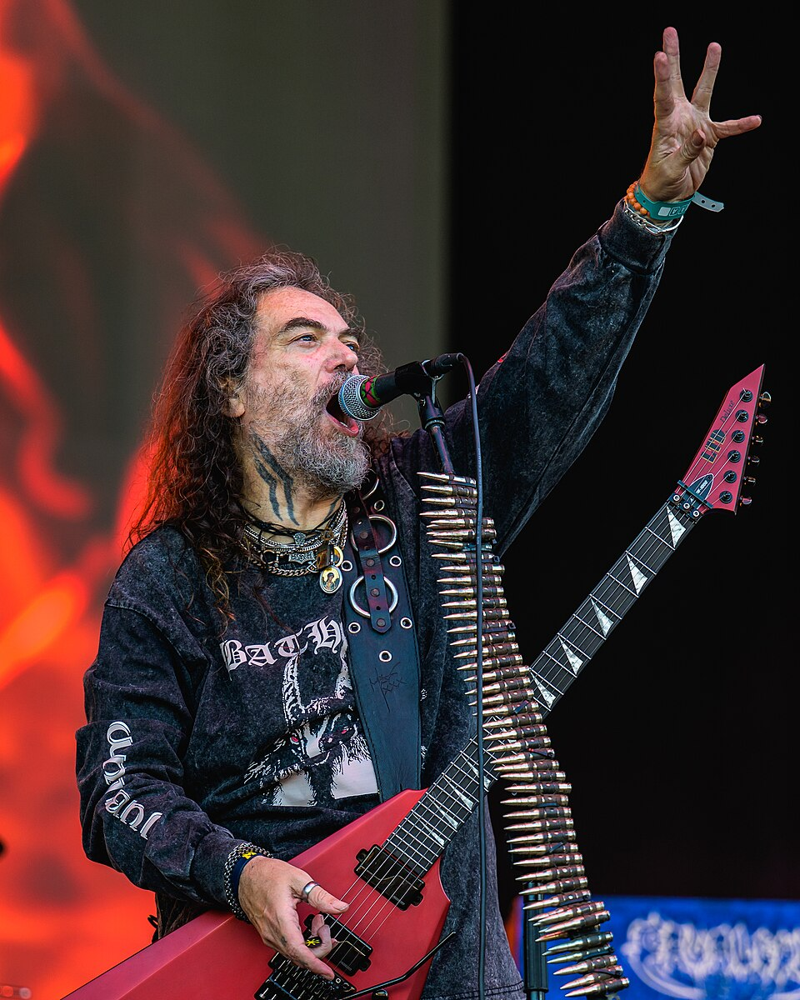
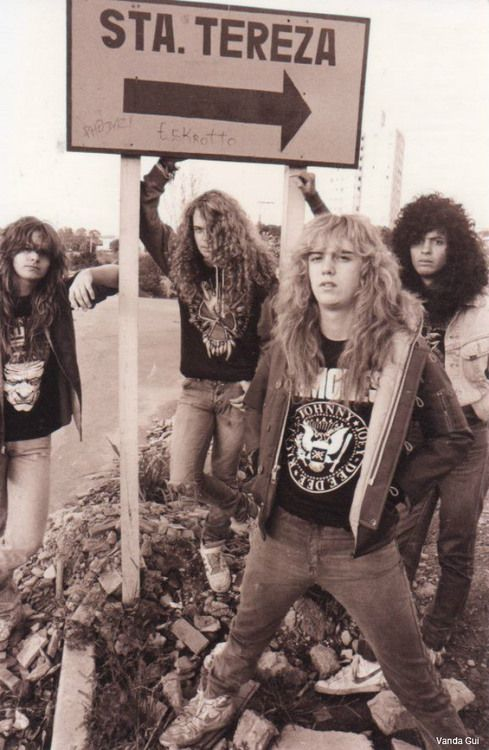

Max Cavalera's Bands
Max Cavalera shaped the modern metal scene with his music. in the 80s, metal was seen as a North American and European genre. Max Cavalera had an entirely different taste however, and being from Brazil, he incorporated elements into his music that were unseen before. As an important figure in the scene, he has been the frontman to several bands.
Max Cavalera's Wiki
Life
Having a father that passed at a young age as well as a youth spent in an unstable environment shaped Max Cavalera's artistry. He formed the band Sepultura in 1984 with his younger brother, which was his breakout project. This led him to move to São Paulo with his band members, and then to America later. He has collaborated with many bands, and been the frontman of several acclaimed bands as well.This site will go over four of them.
